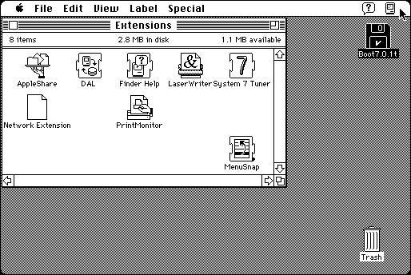

Download
menusnap.zip (8K) MenuSnap 1.0 repackaged into a zipped hfs disk image and checksum file. The disk image can be mounted with Mini vMac.
menusnap.sit.hqx (4K) MenuSnap 1.0 in the original format.
copyright: Paul Sexton
mod date: Mar 9, 1998
license: Freeware
from url :
Shareware
An extension that modifies the behavior of menus. After releasing the mouse button, the mouse pointer snaps “back to the original click location.” Mini vMac must be in Full Screen mode for this to work (to activate the lower level mouse emulation). The author says that “it has only been tested on OS 8.1”, but it seemed to work for me in System 7.0.1.

If you find these downloads useful, please consider helping the Gryphel Project, which hosts them.
Here are the md5 checksums for the downloads, signed with Gryphel Key 5:
--------- GRY SIGNED TEXT --------- 4e9fddbca5770b72270fc65d5f685b55 menusnap.zip 991cb8282734a453d86d7ff4b53e5ce1 menusnap.sit.hqx ------- BEGIN GRY SIGNATURE ------- Gry/4Xa8CFcUzxdN/P9wepuCo1Pe8FBEadFsB3UeV4jMuMkEuXR6EYkuKPqJOz89 B/NMYGgcZBjEIQ7Ok+bBzdmvikQVqn2QVJxuZSNvD3ZN67phGlKffkhG5lZ36chU 8erLbXE1FNLko/G+AlsoDw8x7tmbbXqR59Uk31NaAwv/MAmJCMROu/nxiW8OHnxI -------- END GRY SIGNATURE --------